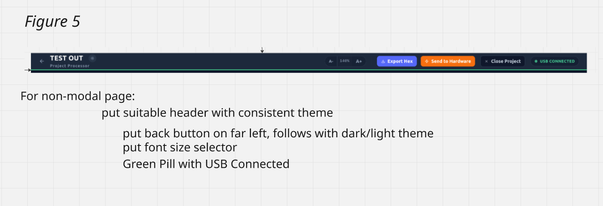
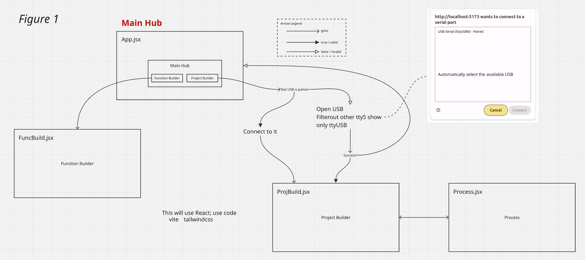
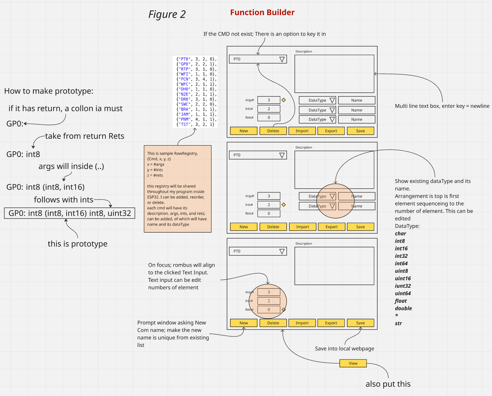
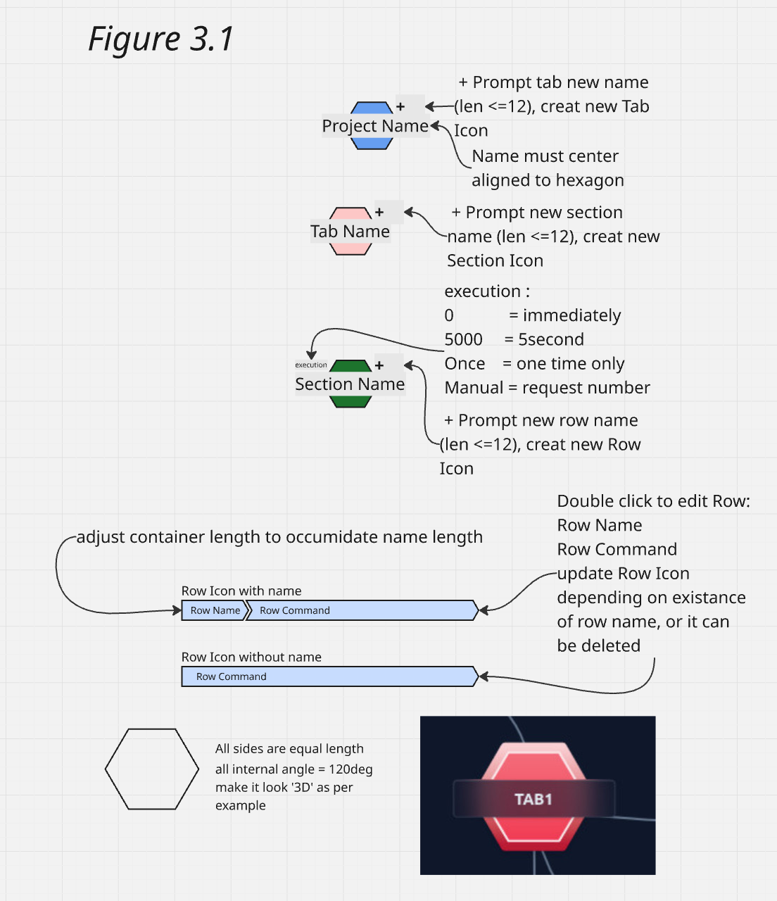
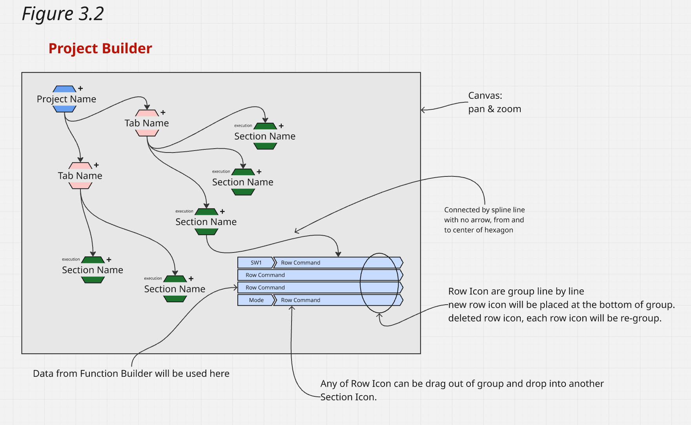
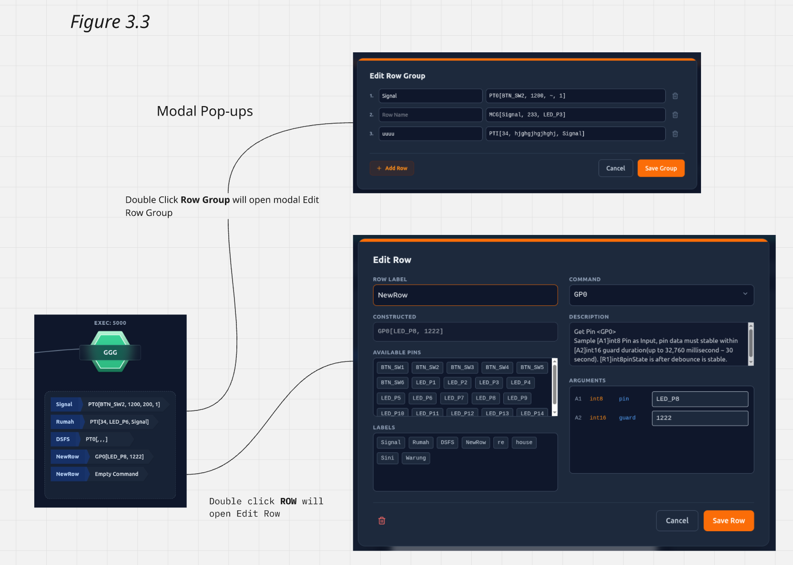
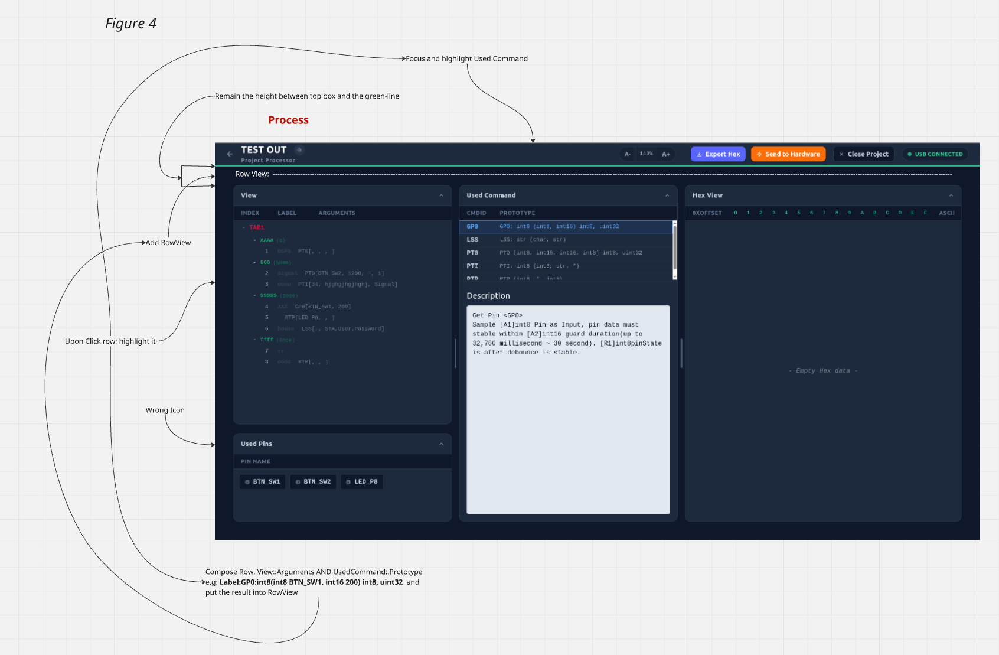

Project Requirements & Workflow Documentation
1. Project Overview & Technical Stack
This project is a React-based web application serving as a central development hub for microcontroller logic generation. It allows users to build C++ command prototypes (specifically tailored for ESP32 firmware) and visually construct execution logic. A core feature is direct hardware integration utilizing the Web Serial API to transmit compiled hex/binary data directly to the board.
- Core Framework: React + Next.js
- Language: JavaScript / TypeScript (Strict typing recommended for hardware payload structures)
- Styling: Tailwind CSS (Requires comprehensive Dark/Light mode support)
- Hardware API: Web Serial API (
navigator.serial)
- Target Environment: Optimized for development on Ubuntu 22.04 (requires specific handling for
/dev/ttyUSB device paths).
Important Developer Note: The provided architecture diagrams mention "Vite" and port `5173`. Disregard Vite. The application must be built, bootstrapped, and routed strictly using Next.js (running on localhost:3000).
2. Global Layout & Header Requirements
All non-modal pages (Function Builder, Project Builder, Process Module) must be wrapped in a persistent <GlobalHeader /> Next.js layout component to prevent unnecessary re-renders.

Missing file: image_9ff146.png
Please ensure this image is in the same folder as this HTML file.
Figure 5: Global Navigation & Status Bar
- Navigation: A back button on the far left to return to the logical previous view or Main Hub.
- Font Size Selector: An interactive group (
A-, 140%, A+) mapped to a global React Context that dynamically scales the root typography rem values.
- Hardware Status Pill: Positioned on the far right. Strictly bound to the Web Serial API state manager. Displays a green "USB CONNECTED" pill when an active connection is verified, and falls back to a gray disconnected state otherwise.
3. Application Architecture & Main Hub

Missing file: image_9ffc44.png
Please ensure this image is in the same folder as this HTML file.
Figure 1: Application Architecture & Serial Connection Workflow
App.jsx (Main Hub)
The entry point featuring two primary routing paths.
- Function Builder Path: Direct routing to
FuncBuild.jsx. No hardware prerequisites.
- Project Builder Path: Gated behind the Web Serial connection logic.
- Evaluates if a USB device is already paired. If true, routes directly to
ProjBuild.jsx.
- If false, triggers
navigator.serial.requestPort().
- Strict Filtering: The port request must filter to display only
ttyUSB ports (filtering out system-level ttyS ports on Ubuntu).
4. Function Builder (FuncBuild.jsx)
A dedicated interface for building and managing a global RowRegistry of command prototypes.

Missing file: image_9ff8a6.png
Please ensure this image is in the same folder as this HTML file.
Figure 2: Function Builder Interface & Row Registry Configuration
- State Management: Maintains an array of objects structured as
{Cmd, x, y, z} (Cmd Name, Args#, Ints#, Rets#). Data must be saved to local browser storage.
- Dynamic Parameter UI: Modifying the numeric inputs (Args, Ints, Rets) must dynamically generate or remove sequential configuration rows.
- Allowed Data Types:
char, int8, int16, int32, int64, uint8, uint16, uint32, uint64, float, double, *, str.
- String Construction Logic: The UI must render a real-time prototype string formatted as:
Cmd : Rets (Args) Ints
5. Project Builder (ProjBuild.jsx)
A visual, node-based interactive canvas for constructing execution logic.

Missing file: image_9ff82c.png
Please ensure this image is in the same folder as this HTML file.
Figure 3.1: Node Hierarchy (Project → Tab → Section → Row)

Missing file: image_9ff525.png
Please ensure this image is in the same folder as this HTML file.
Figure 3.2: Drag-and-Drop Canvas & Spline Connections
Canvas & Interaction Requirements
- Interactive Workspace: The container must support panning and zooming across the node structure.
- Node Styling: Project, Tab, and Section nodes must be strictly hexagonal with a 3D visual aesthetic using Tailwind CSS shadows/gradients. Connected by dynamic spline curves originating from the exact center of each hexagon.
- Row Groups & Drag-and-Drop: Row icons are vertically stacked within a Section. Users must be able to drag a single Row out of its current group and drop it onto another Section to reassign its logic block. The UI must automatically shift elements upward to close any gaps left by deleted or moved rows.

Missing file: image_9ff4aa.png
Please ensure this image is in the same folder as this HTML file.
Figure 3.3: Deep Editing Modals & Hardware Pin Assignment
Modal Editing Workflows
Double-clicking elements on the canvas triggers stateful modals that trap user focus.
Each row under a Section will be put into container
- Edit Row Group (Double-click Row Container): A list view for rapid, bulk editing of row labels, commands, and deletions within a specific section.
- Edit Row (Double-click Row): Deep property inspection. Features a dynamically populated dropdown sourced from the
RowRegistry, read-only metadata, and an interactive grid of Available Pins (e.g., BTN_SW1, LED_P8) that inject their values into the argument input fields upon click.
6. Process Module (Process.jsx)
The final compilation, review, and hardware execution dashboard.

Missing file: image_9ff447.png
Please ensure this image is in the same folder as this HTML file.
Figure 4: The Compilation & Hex Review Dashboard
- Interactive Tree View (Left Panel): Displays the hierarchical project logic. Clicking a row acts as the master state driver for the dashboard.
- Row View Composer (Top Span): Automatically merges the active row's arguments with its Master Command Definition (e.g.,
Label:GP0:int8(int8 BTN_SW1, int16 200) int8, uint32).
- Context Panel (Center): Automatically scrolls to and highlights the active command's metadata and description. Also tracks a consolidated list of utilized Hardware Pins.
- Hex View (Right Panel): A specialized data grid rendering the compiled binary/hex payload (standard 16-byte offset formatting + ASCII representation) prior to triggering the Send to Hardware function over the serial connection.